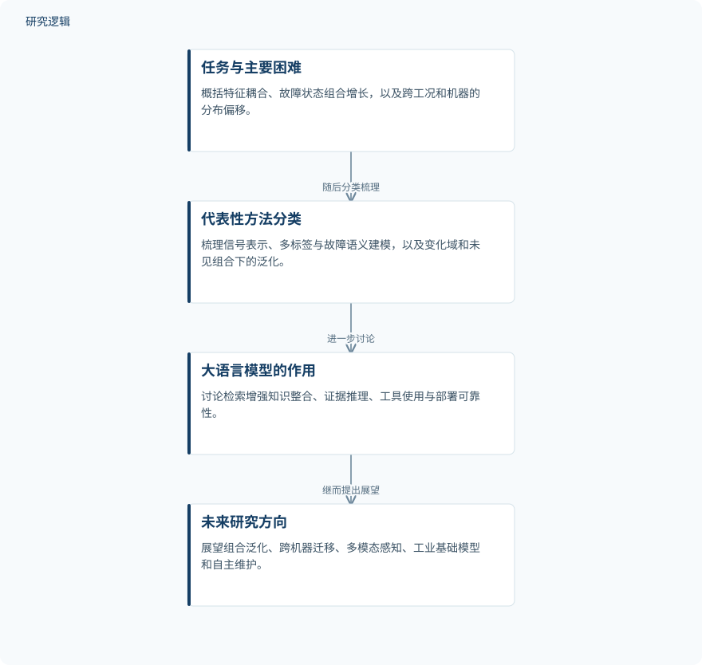

摘要解读
工业机械复合故障诊断：数据驱动方法、挑战与大语言模型增强展望
Compound Fault Diagnosis for Industrial Machinery: Data-Driven Methods, Challenges, and LLM-Enhanced Perspectives
解读更新 2026-11-10 09:52 · 依据公开摘要整理，未核验全文细节
工业机械的多个局部故障同时出现时，监测信号中的故障特征会相互混合，增加识别难度。这篇综述的阅读价值，在于把复合故障诊断拆解为信号、故障语义与泛化问题，并讨论大语言模型可以承担哪些知识与推理角色。
文章目录
复合故障为何难以从信号中分开
复合故障是指多个局部故障同时存在，并共同影响状态监测信号。摘要指出，调制、结构传递、工况变化以及传感器响应都会使故障特征混合，因而增加特征分离和状态识别的难度。
困难还不止于信号耦合。随着故障组合增加，故障状态会出现组合式增长；工况或机器发生变化时，数据分布也可能偏移。这些问题共同构成了本文组织综述的出发点。
按应用场景梳理诊断方法
本文是一篇面向场景的数据驱动诊断综述，而非摘要中报告的新诊断模型。其梳理顺序是先概括任务定义与主要困难，再将代表性方法归入信号表示、多标签与故障语义建模，以及变化域和未见故障组合下的泛化。
对于大语言模型，综述关注检索增强的知识整合、基于证据的推理、使用工具的诊断智能体，以及部署可靠性。这里呈现的是讨论范围，摘要并未给出这些能力的具体实现流程或性能比较。
依据摘要整理的综述组织示意


按摘要陈述展示综述的讨论顺序，不代表诊断算法流程，也不是论文原图。
下载 SVG图示关系说明
实线表示相邻阶段的信息流，虚线表示跨阶段联系或反馈。
任务与主要困难 → 代表性方法分类：随后分类梳理；代表性方法分类 → 大语言模型的作用：进一步讨论；大语言模型的作用 → 未来研究方向：继而提出展望
核心观点：信号、语义与可核验推理相结合
摘要给出的总体判断是，实用的复合故障诊断依赖于信号层面的智能、可复用的故障语义，以及可验证的知识推理相结合。其强调的不是某一种模型单独取代其他方法，而是这些能力之间的结合。
综述还提出组合泛化、跨机器迁移、多模态感知、工业基础模型和自主维护等未来方向。这些属于前景讨论，不能据此认定相关能力已在本文中完成验证，也不能将其表述为已经实现的运维收益。
摘要无法交代的比较与验证边界
仅凭本次摘要，无法判断综述纳入了哪些设备、数据集和样本规模，也无法核对文献筛选方式、方法比较口径，以及跨工况、跨机器或未见故障组合的验证范围。摘要未报告统一性能指标或定量结果，不等于论文没有讨论这些内容。
阅读启发：追问诊断结论如何获得证据
阅读启发：进一步阅读时，可以关注故障语义如何与监测信号对应，以及大语言模型的知识整合和工具使用如何支持可核验的诊断结论。对于工业应用，还应区分“能够生成解释”与“解释有证据支持”，并留意部署可靠性讨论的适用边界。
以上为本站阅读启发与建议，不是论文已验证的结论。